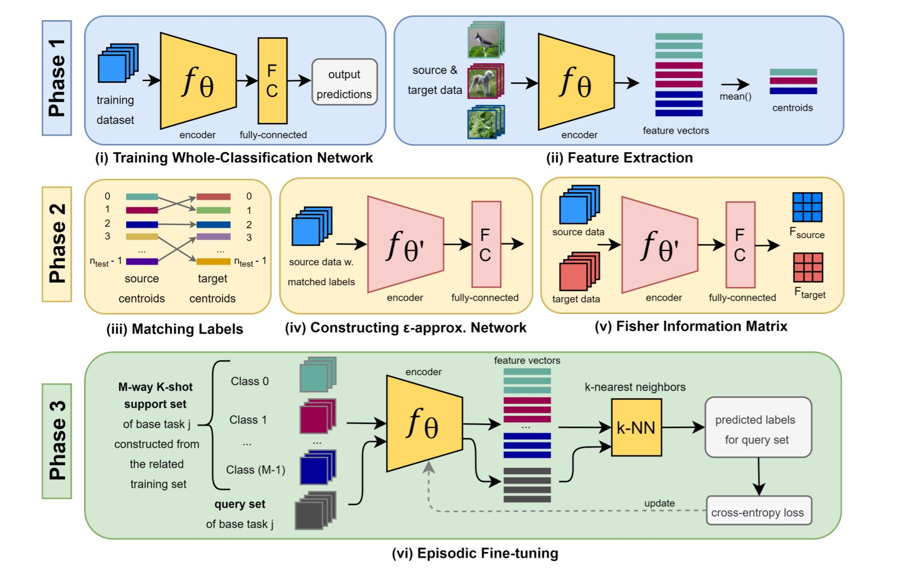
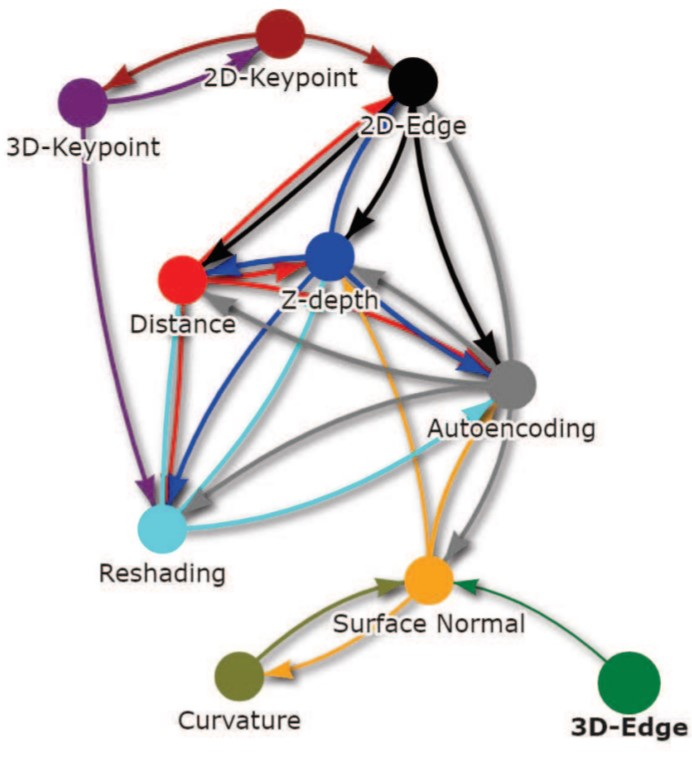

Research

Task Affinity with Maximum Bipartite Matching in Few-Shot Learning
Few-shot Learning
View PaperGithub

Fisher Task Distance and Its Applications in Transfer Learning and Neural Architecture Search
Neural Architecture Search, Transfer Learning
View PaperGithub
Neural Architecture Search From Task Similarity Measure
Neural Architecture Search
View PaperGithub
Task Aware Neural Architecture Search and Task Affinity based on Transfer Complexity
Neural Architecture Search
View PaperGithub
Slides Poster

Supervised Encoding for Discrete Representation Learning
Representation Learning
View PaperGithub
Slides